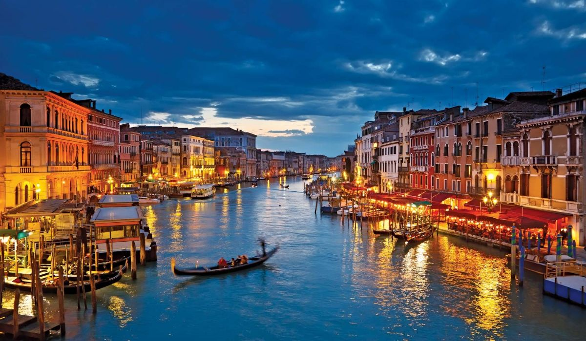
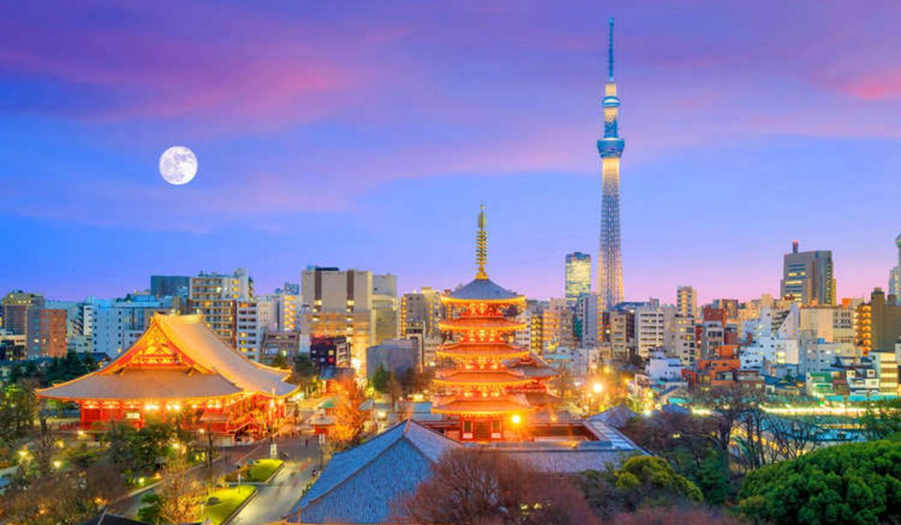
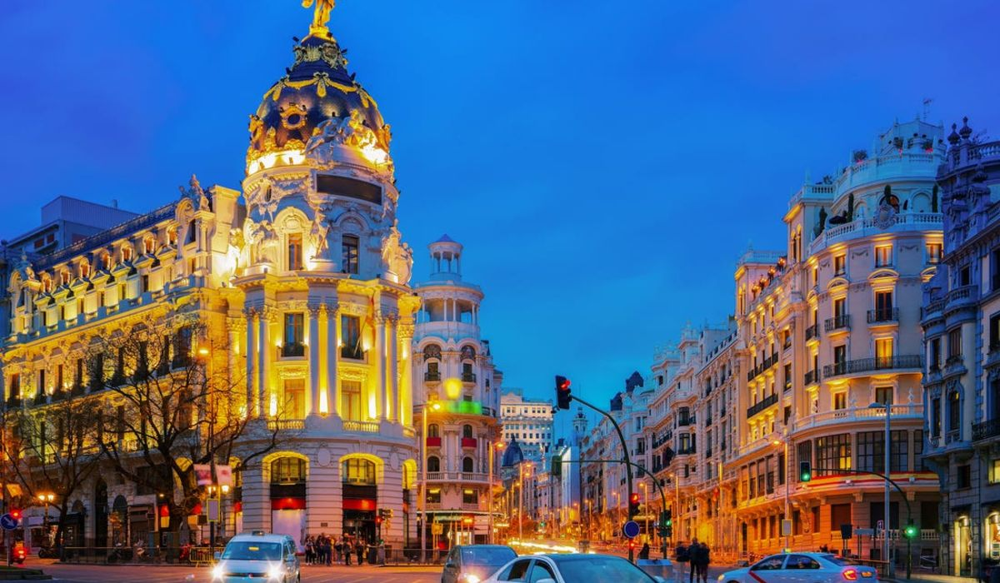

city example 4
There's nowhere on Earth quite like Venice: Its canals, labyrinth of car-free cobblestone streets, and hidden passageways are perfect for wandering.

city example 5
Visiting Japan's imperial capital is like taking a step back in time , kyoto is other special place located in the Kansai region on the island of Honshu.

city example 6
You can't talk about Barcelona without mentioning Antoni Gaudí, the Catalan architect who left his mark all over the city.